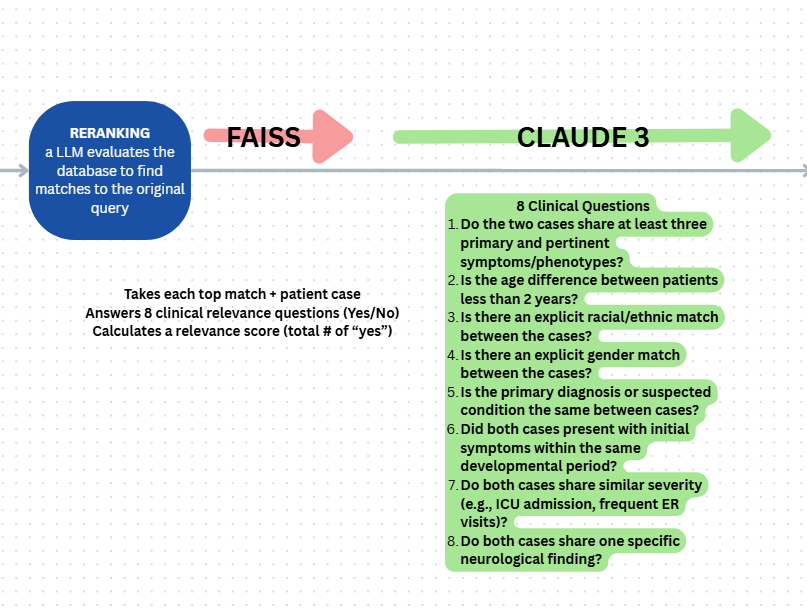
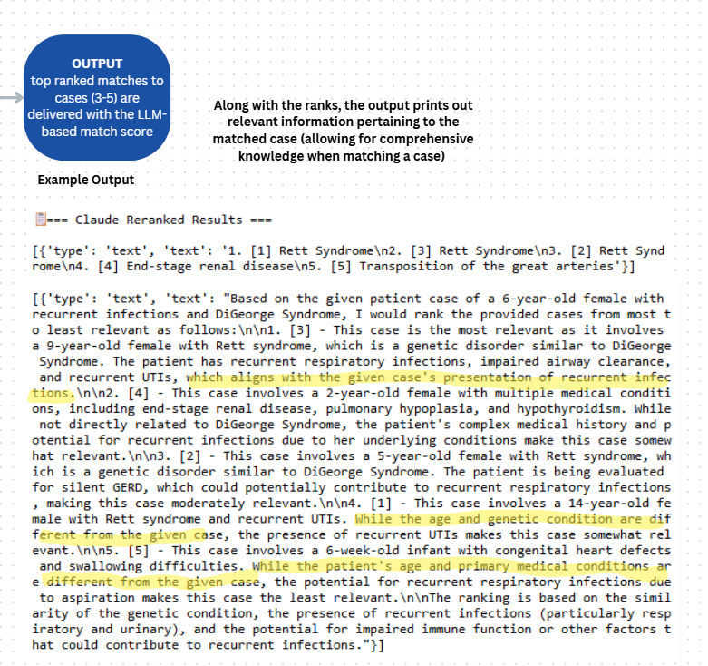
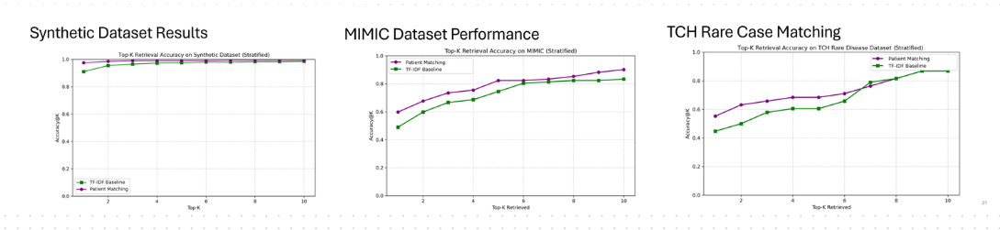

×


Patient Matching AI Tool
- Developed an AWS-based medical record matching pipeline.
- Used FAISS embeddings for semantic retrieval. 
- Implemented Claude 3 reranking for improved physician support. 
- Benchmarked performance across multiple rare-disease datasets. 
- Collaborated in fast-paced clinical AI research environments.